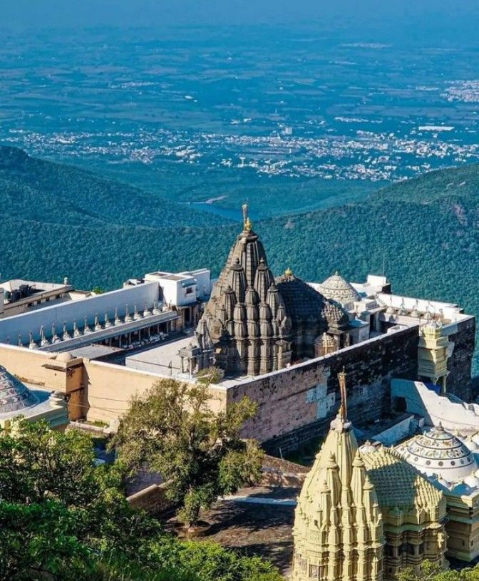
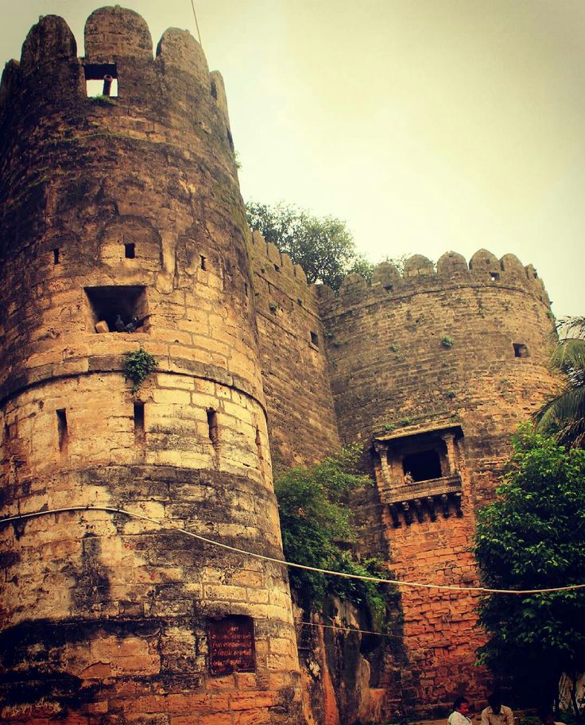
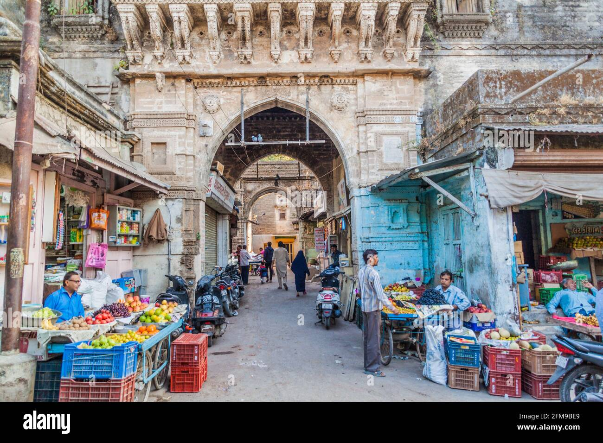
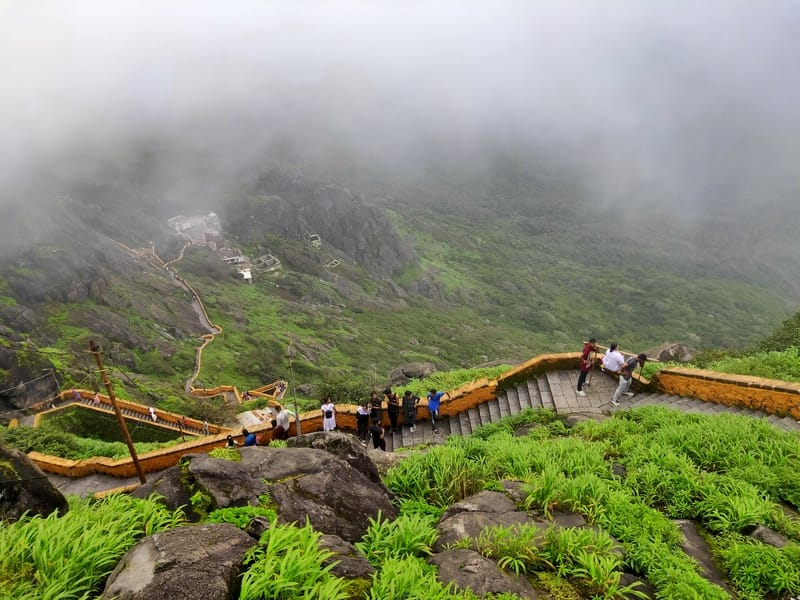
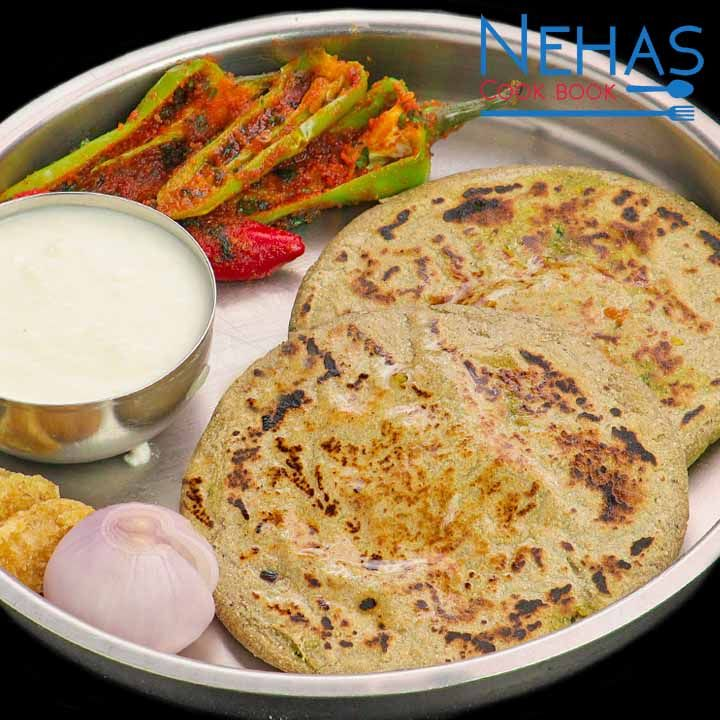

Junagadh Over_all View
Junagadh is a historic city in Gujarat, nestled at the foothills of the Girnar mountains. Known for its rich cultural heritage, ancient monuments, and natural beauty, the city offers a unique blend of spirituality and history. Its streets reflect a mix of Mughal, Rajput, and colonial influences, making Junagadh a fascinating destination for travelers.
Peaceful Nature Spot (Girnar Hills)
Girnar Hills are one of the most sacred and scenic spots in Gujarat. Rising majestically near Junagadh, they are home to ancient Jain and Hindu temples, attracting pilgrims and trekkers alike. The climb to the summit is challenging yet rewarding, offering breathtaking views and a spiritual atmosphere that has inspired visitors for centuries.

Historical Place (Uparkot Fort)
Uparkot Fort is a historic fortress in Junagadh, dating back over 2,000 years. It has witnessed the rule of Mauryas, Chudasamas, and Mughals, and still stands as a symbol of resilience. Inside the fort, visitors can explore ancient stepwells, Buddhist caves, and massive gates that narrate the city’s glorious past.
Local Market (Junagadh Bazar)
Junagadh Bazar is a lively marketplace where tradition meets daily life. From colorful textiles and handicrafts to fresh produce and spices, the bazar reflects the vibrant culture of the city. It is a perfect place to experience local flavors, shop for souvenirs, and interact with the warm-hearted people of Junagadh.


Famous Festival (Girnar Parikrama)
Girnar Parikrama is a famous religious festival held annually, where thousands of devotees walk around the sacred Girnar Hills. The event combines devotion, endurance, and community spirit, creating a powerful spiritual experience. It is one of the most significant pilgrimages in Gujarat, deeply rooted in faith and tradition.
Famous Local Food Items (Meals → Bajra Rotla)
Bajra Rotla is a traditional Gujarati meal, especially popular in Junagadh and nearby regions. Made from pearl millet flour, it is served hot with jaggery, ghee, or seasonal vegetables. Nutritious and wholesome, Bajra Rotla reflects the simplicity and earthy flavors of rural Gujarat, making it a staple food of the region.
